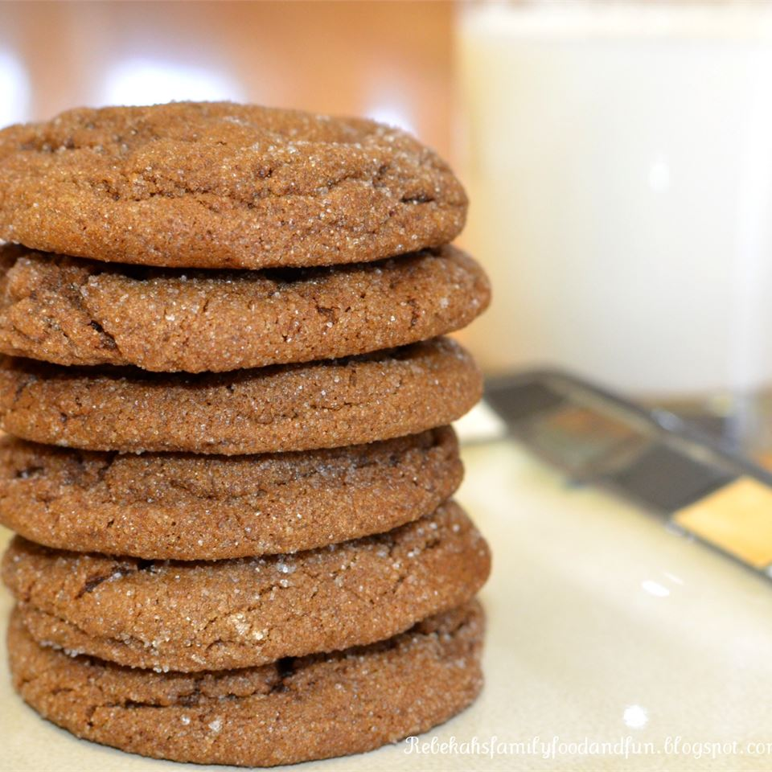

Molasses Cookies

These spicy, soft cookies will definitely hit the spot any time of
year, but the colder months will really make them stand out!
With a short prep time and minimal steps, these cookies are great for
a beginning baker.
Ingredients
- 1 cup butter, softened
- 1/2 cup brown sugar
- 1 egg
- 3/4 cup molasses
- 3 cups all-purpose flour
- 2 teaspoons baking soda
- 1/2 teaspoon ground cinnamon
- 1 teaspoon ground ginger
Steps
-
In a large bowl, cream together the butter, brown sugar
and egg until well blended. Stir in the molasses. Combine
the flour, baking soda, cinnamon and ginger; stir into the
molasses mixture. Cover the dough and chill for at least 1 hour.
-
Preheat oven to 350 degrees F (175 degrees C). Grease cookie sheets.
Roll the dough into walnut sized balls. Place the cookies 2
inches apart onto the prepared cookie sheet.
-
Bake for 8 to 10 minutes in the preheated oven. Allow cookies
to cool on baking sheet for 5 minutes before removing to a wire
rack to cool completely.